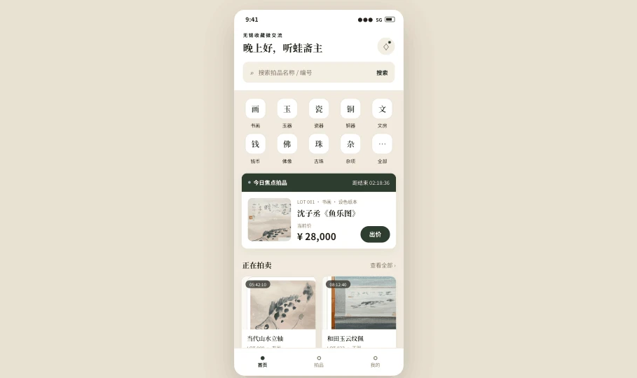
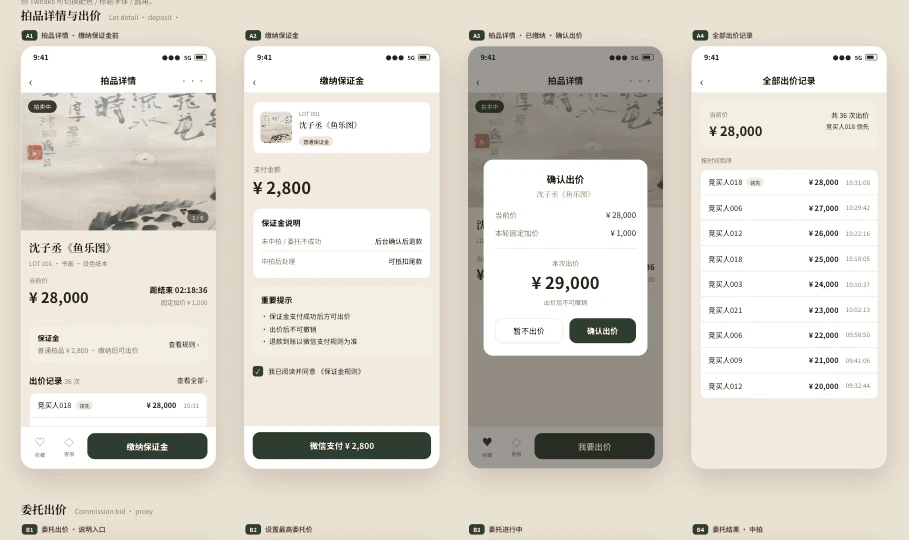
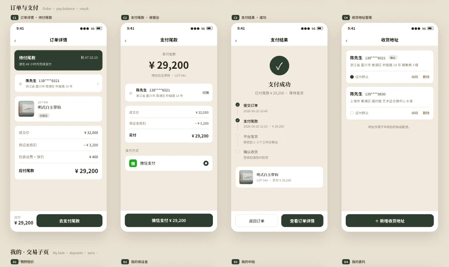
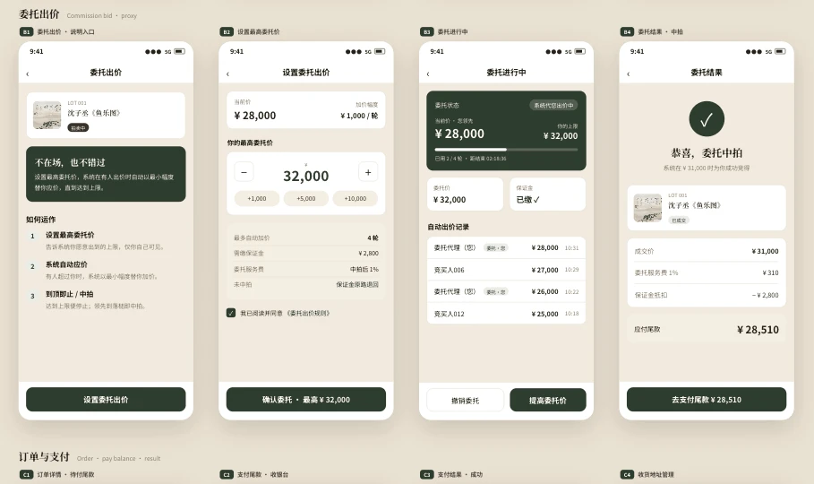
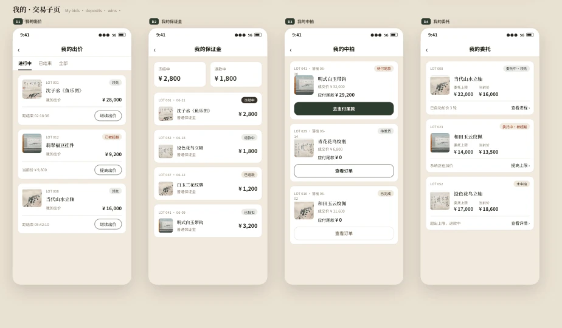
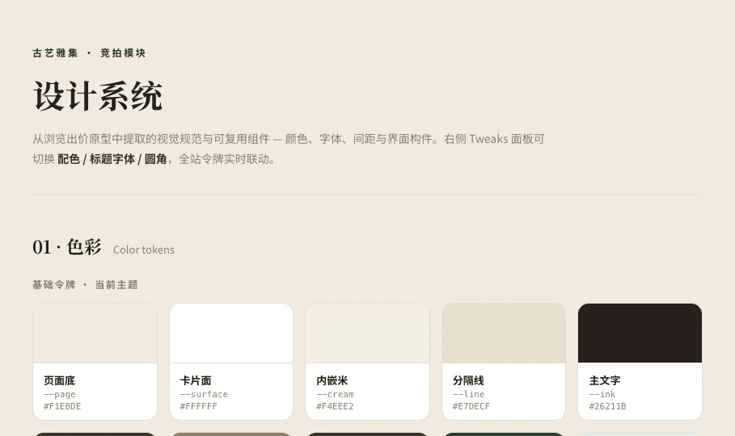

内容平台，增加竞拍能力
在已有资讯小程序中加入拍卖模块，让用户从发现藏品进入拍品筛选、竞价与个人交易管理。
无锡收藏微交流 · 竞拍模块
收藏拍卖小程序
从内容浏览扩展到竞拍交易，梳理保证金、出价、成交与履约之间的关系，让每一步操作都有明确的状态与反馈。
体验 MVP 原型 ↗查看产品过程 ↓
01 / FROM RULES TO EXPERIENCE
在已有资讯小程序中加入拍卖模块，让用户从发现藏品进入拍品筛选、竞价与个人交易管理。
交保证金不等于成交，最高出价也不直接生成最终交易。将管理员确认、退款与补款明确纳入链路。
从焦点大图、结构化网格和编辑式排版中选择网格方案，兼顾拍品密度、重点推荐与快速出价。
02 / TRANSACTION FLOW
未成交的分支
保证金进入待退款，管理员确认后发起原路退款；退款失败保留人工处理入口。
V1 的范围
优先完成固定时间竞拍的交易闭环。直播拍卖、自动延时与复杂钱包能力不纳入本期。
03 / THREE MAIN TABS
04 / KEY MOMENTS
查看拍品时理解规则，出价前确认金额，成交后处理订单。点击画面可查看完整设计。




05 / INTERACTIVE MVP
这里保留上传的交互设计，可查看筛选、提醒与操作反馈。示例拍品与金额仅用于演示，不发生真实竞价或支付；部分跨页面跳转仍为提示反馈。
06 / DESIGN SYSTEM
暖纸色背景与深林绿行动按钮，配合清晰的文字层级，把视线留给拍品与价格。标题保留人文感，界面正文以易读为先。

07 / DELIVERY & NEXT STEP
V1.0 PRD、需求与规则确认材料、页面结构、字段字典、低保真原型、交互说明与核心流程图，以及本次展示的高保真界面和交互原型。
补齐状态转换、接口清单与验收用例；确认保证金、佣金、退款及对账规则；接入真实路由、业务数据与支付，并替换示例拍品图片。
本案例展示产品设计与原型阶段成果，暂无真实交易或运营数据。